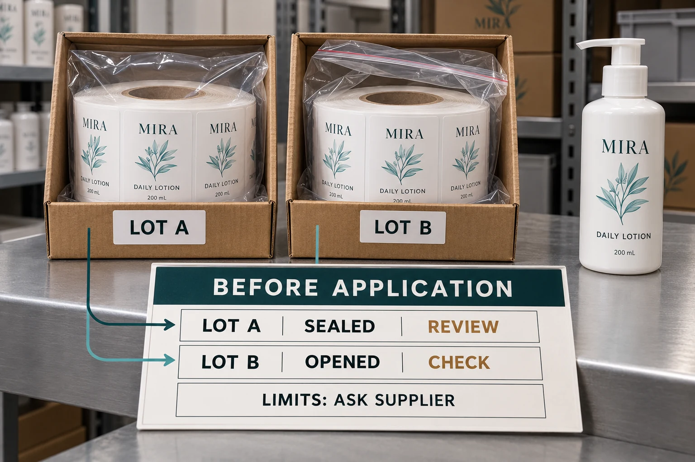

Ask for limits that belong to the actual label
“How long do labels last?” is too broad for a purchase release. Ask the printer to identify the supplied face stock, adhesive, liner and finish, then provide the relevant storage and shelf-life guidance. Clarify what event starts any stated period and whether the guidance covers finished printed rolls, rather than only unused raw material.
Avery Dennison's storage bulletin distinguishes raw stock from finished labels, recommends retaining protective packaging and explains that materials age differently. It also ties eventual use to physical and visual suitability. That is manufacturer guidance, not a universal expiry date for every custom label.
Do not silently apply a number found for a different stock to your own purchase. A storage instruction, an application condition and an expected service environment answer different questions. If the quotation only names “white film,” the construction needs clarifying before its limits can be checked.
Preserve the packaging and the information together
Keep the roll identifier, carton identification and supplier documents connected. When a sample roll is removed for review, make a simple record of which carton it came from and where the remaining material is stored.
The same manufacturer bulletin discusses boxes and protective pouches as ways to limit exposure of finished labels to moisture, light, dirt and dust. Follow the actual supplier's instructions for your construction and storage arrangement. Avoid improvising a universal rule for stacking or roll orientation from a product photograph.
Opening a carton is not automatically a reason to reject its contents. Losing track of what was opened is a reason to investigate. If only one roll was exposed during a sample review, do not mark the whole delivery as having the same history without checking.
Separate the approved design from the stored material
Two records matter here. One identifies what the brand approved. The other describes the condition of the physical labels waiting for application.
The design can remain correct while a storage issue needs review. Conversely, a carefully protected roll can contain an artwork revision the current job must not use. Neither question cancels the other.
Use the cosmetic label reorder guide to connect artwork, retained references and the supplier specification. Keep the storage record alongside that release, rather than turning an old approval email into permission to use every roll with the same product name.
Use a storage record that the next shift can read
The following fields form a practical starting point. They are an editorial workflow recommendation, not a certified inspection procedure.
| Record | What to enter | Why it changes the next decision |
|---|---|---|
| Job and roll identity | Supplier job, SKU, artwork revision and roll or carton ID | Establishes which physical material is being discussed |
| Received and opened | Receipt date; opening or repacking event if known | Separates known handling from assumptions |
| Supplier conditions | Applicable document and revision; missing limits clearly marked | Prevents another material's guidance becoming the default |
| Storage location | Identifiable shelf or controlled area; any recorded excursion | Makes the history reviewable |
| Package condition | Intact, opened and reclosed, damaged, or unknown | Helps define which material needs attention |
| Planned use | Filling site, application method and intended date | Connects the waiting stock to the actual next job |
| Disposition | Continue storage, request review, hold, or release by named owner | Prevents an observation being mistaken for approval |
Do not fill an unknown temperature history with the room's temperature today. Record the gap and ask which evaluation is appropriate. An honest empty field is more useful than a reassuring invented value.

Decide what should be checked before the rolls move
Before dispatching stored labels, reconcile the recorded identity with the current production request. Inspect the protective packaging and note visible concerns, such as damage, contamination, unfamiliar appearance or an unexplained change in handling history.
Then ask the supplier and receiving operator what the concern means for this construction. Where suitability needs evaluation, identify the affected stock and agree a relevant sample or application check. Record who can release it and what remains unresolved.
A clean-looking roll does not establish adhesion on the filled bottle or feed performance on the applicator. Our co-packer roll specification guide covers that different handoff. A storage review should provide the correct material to that process, not replace it.
Two sensible storage decisions can look different
Consider two hypothetical projects. The first uses an identified, protected delivery within the supplier's stated conditions, with no change in the approved job. Its review can concentrate on reconciling records and following the agreed release process.
The second involves an opened roll with uncertain history and a changed filling arrangement. It deserves a targeted hold and clarification before use. That does not prove the roll is unusable. It means the evidence needed for release is incomplete.
Ordering a large buffer may reduce how often purchasing places an order, but it also increases the material waiting to be used. Compare that tradeoff with your actual forecast, revision frequency and supplier terms. No generic storage article can establish the economical stock level for your brand.
Prepare the storage question with the next order
For a custom cosmetic label project, send the intended container, artwork versions, quantity per design, expected wait before application and filling location. Ask for construction-specific storage guidance and explain any stock you expect to open for samples.
Use the YT Labels inquiry form to prepare the message, then send supporting files by email or WhatsApp. The form itself does not upload those attachments. With an existing delivery, include its job reference, roll IDs, packaging condition and the particular question that prevents release.
The useful outcome is a documented next action for identified stock. It is not a shelf full of boxes that everyone assumes someone else has checked.